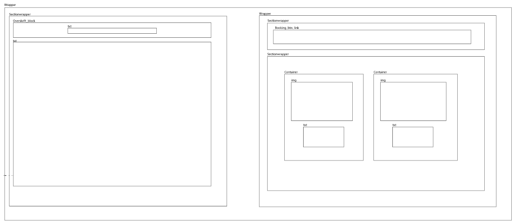
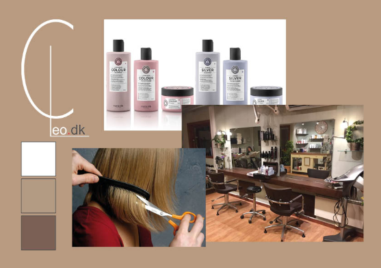
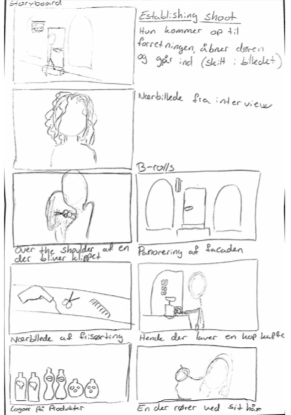

I dette forløb arbejdede vi med redesign af et website, samt produktion af en video for en virksomhed.
Vi benyttede os af viden fra tidligere forløb ved at udarbejdede wireframes og layoutdiagrammer til de forskellige sektioner af vores hjemmeside.
Vi lavede også et styletile, for at få en fælles forståelse af det look vi gerne ville have.
Vi lavede også storyboard til vores video. Dette gjorde vi for at sikre at den tid som var afsat til at filme, blev struktureret ordenligt.
